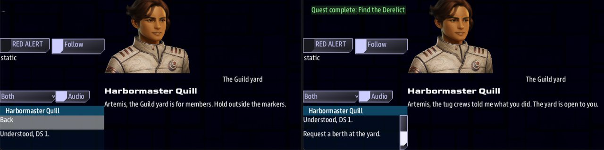

Class 2, Lecture 6 - Reputation, a first look¶
What you will have at the end¶
A side that remembers. The Harbor Guild values two things, and it keeps a score for the ship on each of them. What the crew does for DS 1, and one thing they say, move those scores. Later, when the ship comes near the Guild's yard, Quill greets a crew she has no reason to like one way, and a crew the tug crews spoke up for another way. The second crew gets an answer the first is never offered.

The Guild yard, twice. Left, the cold line with one answer. Right, the warm line with two.You will edit one file, mission.amd: one line on a side, one line on a character, a few
words on a quest and on an answer, then one beat and one scene. Nothing in story.mast
changes.
This is a first look. Class 5 comes back to reputation in Open Universe, where standing also sets prices, quests and ceasefires. Everything you learn today is true there too.
The video¶
About 7 minutes. Subtitles are available in the player.
Before you start¶
- Your mission as Lecture 5 left it. The crew tags the hulk for DS 1, and the quest pays when Comms tells Quill and Chief Ives that the beacon is set.
sbs lint MyMissionsaysclean.- The game closed.
This lecture is done in a copy of your mission. Lecture 7 starts from the file Lecture 5 left, line for line, so today's lines must not go into it. Make the copy now:
- Open File Explorer and go to
C:\Cosmos\data\missions. - Click the folder
MyMissiononce. Press Ctrl+C, then Ctrl+V. Windows makes a folder calledMyMission - Copy. - Click the new folder once, press F2, and type
MyStanding. Press Enter. - In VS Code, choose File, then Open Folder, and open
MyStanding. If VS Code asks whether you trust the folder, say yes.
Check the copy:
For the rest of this page, the folder is MyStanding. The game is started like this:
Words for this lecture:
| Word | Meaning |
|---|---|
| Trait | One way of behaving that a side can care about: honest, generous, fearsome |
| Value | A trait a side cares about, with a number for how much |
| Deed | Something the crew does that a side hears about |
| Score | What one side has heard about one ship on one trait. It starts at 0 |
| Standing | One number, from -100 to 100: what one side thinks of one ship. It is worked out from the scores |
Step 1 - The Guild says what it values¶
In Lecture 1 you wrote who the Harbor Guild stands with. That is a relation: it is between two sides, and it is the same for every ship. Reputation is between a side and one ship, and the crew earns it.
The game measures a ship on seven pairs of traits. Each pair is one line with two ends.
| One end | The other end |
|---|---|
honest |
liar |
fearsome |
cowardly |
peaceful |
violent |
generous |
selfish |
kind |
cruel |
resourceful |
by-the-book |
intellectual |
foolish |
Neither end is the good one. A navy may value by-the-book. A band of wreckers may value
fearsome and think nothing of kind.
Find Harbor Guild in the Sides section. Add one line to its fence, under Allies::
### [Harbor Guild](guild)
---
Color: #0C6
Allies: tsn
Values: honest 40, generous 30
---
The pilots and tug crews who work the lanes around DS 1.
Each item is a trait and a weight, with a comma between items. The weight says how much that trait counts beside the others. The weights do not have to add up to anything.
Save. Run lint: clean.
Step 2 - Quill speaks for the Guild¶
Standing is always somebody's opinion. When a line of Quill's asks about standing, the game has to know whose opinion she is giving. You tell it on her record.
Find Harbormaster Quill in the Characters section. Add one line under her Face:
line:
### [Harbormaster Quill](quill)
---
Face: ter #e4cb8e 1 0;ter #fff 12 6;ter #e4cb8e 3 1;ter #e4cb8e 5 2;ter #704025 7 3;
Side: guild
---
Runs traffic control on DS 1. Has watched this lane for eleven years.
guild is the side's key, the word in round brackets on its heading. You have typed
Side: before, on a landmark. On a character it means: this person speaks for that side.
Leave your own Face: line as it is. Only the Side: line is new.
Save. Run lint: clean.
Step 3 - A deed in work¶
A deed is written with the word earns and three more words: a side's key, a trait, and
a number.
Find Report to DS 1 in the Quests section. Change its Reward: line:
| Part | What it means |
|---|---|
150 credits |
The pay, as before |
| The comma | It separates two rewards. It has to be there |
earns guild honest 30 |
The deed. When the step completes, 30 is added to the ship's honest score with the Guild |
The crew did the work and came back to say so. The Guild calls that honest.
Save. Run lint: clean.
Step 4 - A deed in talk¶
An answer can be a deed too. earns is one more thing that can follow the ;, beside
the four words from Lecture 4.
Find the scene Quill Calls Back. Add a second answer below the first:
- [It is ours, DS 1. The beacon is set.]() ; completes report_in
- [It is ours. Give our fee to the tug crews.]() ; completes report_in, earns guild generous 30
Both answers finish the step. That is Lecture 5's rule: every answer that ends the call
finishes the step that is waiting on it. So both answers earn honest 30 from the quest,
and the second earns generous 30 on top.
The crew still gets its 150 credits either way. Nothing here takes the fee away. The second answer is the crew saying a generous thing, and the Guild hearing it. An answer that really costs credits is Open Universe's, in Class 5.
Save. Run lint: clean.
Step 5 - A call that reads standing¶
Now something has to ask. The Guild's yard has been on your map since Lecture 1, west of
DS 1, wearing the role yard. When the ship comes near it, Quill will call.
The beat. Find Report to DS 1 in the Quests section. Leave one blank line below its description, and type:
### [The Yard Calls](yard_calls)
---
Beat
Starts when: reach yard 1500
Action:
- quill hails quill_yard
---
The Guild yard has seen the ship coming, and Quill speaks for it.
The scene. Go to the end of the file. Leave one blank line, and type:
### [The Guild Yard](quill_yard)
---
Speaker: quill
When: hail
Title: The Guild yard
---
%{standing < 30} Artemis, the Guild yard is for members. Hold outside the markers.
%{standing >= 30} Artemis, the tug crews told me what you did. The yard is open to you.
- [Understood, DS 1.]() ; completes yard_calls
The two % lines are new. Until today, two % lines in a block were two takes, and the
game picked one at random. These two each have a guard: a condition in curly brackets,
straight after the %.
| Part | What it means |
|---|---|
%{standing < 30} |
This line can be said only to a ship whose standing with the speaker's side is below 30 |
%{standing >= 30} |
This line can be said only to a ship whose standing is 30 or more |
standing |
The standing of the ship that opened the call, with the side the speaker speaks for. Quill speaks for the Guild |
Three rules for guards on lines.
- The curly brackets touch the
%.%{standing < 30} Artemis..., with one space after the closing bracket. - One comparison in a guard. The signs are
>=<===!=><. There is noand. - Leave no gap. Below 30, and 30 or more: between them the two guards cover every ship. If no line can be said, the call opens with no words.
Save. Run lint: clean.
Step 6 - An answer that needs standing¶
Add one more answer to The Guild Yard, below the first:
- [Understood, DS 1.]() ; completes yard_calls
- [Request a berth at the yard.]() if standing >= 30 ; completes yard_calls
In Lecture 4, Step 7, you were shown a condition on an answer and told to leave it alone,
because in a mission like yours there was almost nothing it could read. standing is
something it can read, now that Quill speaks for a side.
The order on the line is fixed: the round brackets, then if and the condition, then the
; and what the answer does.
A ship below 30 is not shown the second answer at all. It is not greyed out. It is not there.
Save. Run lint: clean.
Step 7 - How the number is worked out¶
For each trait a side values, the game keeps a score for the ship. Standing is the
average of those scores, and the weights on the Values: line decide how much each score
counts.
The Guild values honest 40, generous 30. The weights add up to 70. Here is your own
story, measured:
| What the crew has done | honest | generous | The sum | Standing |
|---|---|---|---|---|
| Nothing yet | 0 | 0 | 40 x 0 + 30 x 0 = 0 | 0 / 70 = 0 |
| Reported, with the plain answer | 30 | 0 | 40 x 30 + 30 x 0 = 1200 | 1200 / 70 = 17 |
| Reported, and gave the fee to the tug crews | 30 | 30 | 40 x 30 + 30 x 30 = 2100 | 2100 / 70 = 30 |
Read the middle row again. The quest says earns guild honest 30, and the ship's
standing is 17, not 30. A deed moves one score. Standing is all of the side's scores
together. A crew that pleases the Guild in one thing only gets about half way.
That is why your two guards say 30. The plain answer leaves the crew at 17 and outside the markers. Only the generous one gets them a berth.
Two more things about scores.
- A deed that names the other end of a pair takes the score down.
earns guild selfish 30takes 30 off the ship's generous score. - A score stops at 100 and at -100. So does standing.
Step 8 - Whose standing it is¶
Standing belongs to a ship. It does not belong to the crew's side, and it is not shared round the table.
With one ship in the game there is nothing more to it. This is what happens with two, measured with the Artemis and the Intrepid, when the Artemis reports and gives the fee away:
| Artemis | Intrepid | |
|---|---|---|
The quest completes: earns guild honest 30 |
honest 30 | honest 30 |
The answer: earns guild generous 30 |
generous 30 | Nothing |
| Standing with the Guild | 30 | 17 |
| At the yard, Quill says | The tug crews told me what you did | The Guild yard is for members |
| Answers offered | Two | One |
| Where the deed is written | Who is paid |
|---|---|
On a quest with Scope: shared |
Every player ship flying when the quest completes |
| On an answer | The ship whose Comms officer gave the answer |
Four more facts to write by.
| Fact | What it means for your story |
|---|---|
| Nothing you have written shows the crew the number | They learn their standing from what changes: a greeting, an answer on offer. Write lines that tell them |
| Standing with one side is no business of another | Nothing the crew does for the Guild is heard by the Breakers, unless you write a deed that names them |
A side with no Values: line counts every score the same |
Its standing is the plain average of whatever the ship has earned with it |
| It lasts for one game | Your mission starts every game at 0. Open Universe saves it (Class 5) |
One thing that reads the scores without being asked¶
The stock game has a rule of its own, in the part of LegendaryMissions that flies fleets, and your mission loads that part. A side's fleets stop choosing a ship as a target once that ship's scores with the side add up to 60. It is the plain sum of the scores, not the weighted standing. Your own numbers reach it: honest 30 and generous 30 add up to 60, and at that moment the game's own check answers that Guild fleets would leave the Artemis alone. At honest 30 alone it answers that they would not.
In this mission that changes nothing you can see. The Guild is an ally and flies no fleets. It was measured by asking that rule its question, not by watching a fleet hold its fire. Remember it for the day you write deeds for an enemy side in a mission that has fleets: two generous answers can end a war for one ship while the ship beside it is still being shot at.
Your finished pieces¶
In the Quests section:
### [Report to DS 1](report_in)
---
Scope: shared
Starts when: revealed
Objective: Answer DS 1 and tell her the beacon is set
Reward: 150 credits, earns guild honest 30
Action:
- quill hails quill_thanks
---
 Chief Ives, salvage desk, DS 1
The beacon is live. DS 1 pays when she hears it from the ship.
Chief Ives will not write a claim into the ledger on a beacon's signal alone. Somebody aboard the ship that set it has to say so on Comms, so that it is on the record.
### [The Yard Calls](yard_calls)
---
Beat
Starts when: reach yard 1500
Action:
- quill hails quill_yard
---
The Guild yard has seen the ship coming, and Quill speaks for it.
In the Sides section:
### [Harbor Guild](guild)
---
Color: #0C6
Allies: tsn
Values: honest 40, generous 30
---
The pilots and tug crews who work the lanes around DS 1.
In the Characters section, one new line on Harbormaster Quill:
At the end of the file:
### [Quill Calls Back](quill_thanks)
---
Speaker: quill
When: hail
Title: Your beacon
Priority: 5
---
@quill
% Something just started singing out by that hulk. Tell me it is yours.
% I have a new beacon on my board, out by the hulk. Is that your work?
@ives
% Salvage desk. If it is theirs, I need to hear them say it.
% Chief Ives, salvage desk. Say it for the ledger, please.
- [It is ours, DS 1. The beacon is set.]() ; completes report_in
- [It is ours. Give our fee to the tug crews.]() ; completes report_in, earns guild generous 30
### [The Guild Yard](quill_yard)
---
Speaker: quill
When: hail
Title: The Guild yard
---
%{standing < 30} Artemis, the Guild yard is for members. Hold outside the markers.
%{standing >= 30} Artemis, the tug crews told me what you did. The yard is open to you.
- [Understood, DS 1.]() ; completes yard_calls
- [Request a berth at the yard.]() if standing >= 30 ; completes yard_calls
The whole file is in example\.
Step 9 - Check it¶
Every row below was made on purpose, one at a time, on the finished file. Lint was run, and then the game was run without a screen, by a script that took the quest, reported, flew to the yard, opened the call and read what was said and what was offered.
Lint knows your sides and it knows the fourteen traits. This is what it says when the
side after earns is misspelled:
== mission.amd ==
[WARNING] line 173: `earns gild honest 30` - `gild` is not a side in this mission, so the standing is filed where nobody looks. A side is named by its key, the word in round brackets on its heading. Declared here: breaker, guild, tsn. (earns-unknown-side)
1 amd + 1 mast file(s): 0 error(s), 1 warning(s)
Lint names these.
| Mistake | What the game does | Lint says |
|---|---|---|
earns gild honest 30 (the side misspelled) |
Keeps the 30 for a side that does not exist. Standing with the Guild stays at 0 | earns-unknown-side. It lists the sides you have |
earns guild honset 30 (the trait misspelled) |
Keeps the 30 under a trait no side values. Standing stays at 0 | earns-unknown-trait. It lists the words it knows |
Reward: 150 credits earns guild honest 30 (no comma) |
Pays the 150 credits. No deed | earns-shape: put a comma before earns |
; completes report_in, earns guild generous (no number) |
The step completes. No deed from the answer | earns-shape |
; completes report_in earns guild generous 30 (no comma) |
The call ends, and Report to DS 1 stays running and unpaid. No deed. A line in mast.runtime.log |
outcome-quest-missing and outcome-run-together. The second writes the line out with its comma |
Value: for Values: |
The Guild values nothing in particular. See "no Values: line" in the next table |
unknown-field |
Side: gild on Quill (the key misspelled) |
She speaks for nobody. standing reads 0 whatever the crew has done: the cold line and one answer, for good |
dangling-side. It lists the sides you have |
Values: honset 40, generous 30 (a trait misspelled) |
The Guild values a trait no deed can name. Both deeds give a standing of 12, where they should give 30 | values-unknown-trait. It lists the fourteen traits |
Values: honest 40 generous 30 (no comma) |
Standing never moves from 0 | values-unknown-trait: put a comma after each number |
Values: honest, generous (no numbers) |
Standing never moves from 0 | values-no-weight, once for each trait |
%{standing => 30} (the sign backwards) |
The line is never said. A ship at 30 opens the call and reads no words | unreadable-guard. It lists the signs: >= <= == != > < |
%{standing >= 0 and standing < 30} (two comparisons) |
The line is never said. A ship at 17 opens the call and reads no words | unreadable-guard and guard-joined |
%standing >= 30 Artemis, the tug crews... (no curly brackets) |
No guard. Quill says the words standing >= 30 out loud |
guard-no-braces. It writes the guard out with its brackets |
What lint cannot see. For every row of this table lint says clean.
| You wrote | What happens |
|---|---|
No Side: line on Quill |
She speaks for nobody. standing reads 0 whatever the crew has done: the cold line and one answer, for good |
Side: guild typed in the fence of the scene, not on Quill's record |
The same |
No Values: line on the Guild |
Standing is the plain average of whatever the ship has earned with the Guild. The plain answer gives 30, so every crew that reports gets the warm line and the berth |
if standng >= 30 on the answer (a word misspelled) |
The answer is never offered. A ship at 30 hears the warm line and sees one answer |
%{standng >= 30} on the line |
The line is never said. A ship at 30 opens the call and reads no words, with both answers under them |
if standing >= 300 |
The answer is never offered. Standing stops at 100 |
% Artemis, the Guild yard is for members. (the guard left off the cold line) |
That line can always be said. A ship at 30 was told to hold outside the markers, and offered the berth under it |
%{standing < 10} and %{standing >= 30} (a gap) |
A ship at 17 opens the call and reads no words |
earns guild fearsome 30 (a trait the Guild does not value) |
The score is kept, and standing does not move |
earns guild generous 500 |
The generous score stops at 100. Standing is 60 |
These are fine.
| You wrote | Result |
|---|---|
earns Guild Honest 30, with capitals |
Works |
earns guild selfish 30 on an answer |
Works. The generous score goes to -30, and with honest 30 the standing is 4 |
if generous >= 30 |
Works. A trait's name, in place of standing, reads that one score with the speaker's side |
Values: fearsome 50 on the Breakers, who nobody speaks for |
Harmless. Nothing reads it until somebody does |
earns breaker fearsome 30, a deed with a side that has no Values: line |
Works. The score is kept with the Breakers and changes nothing with the Guild |
A Penalty: line with an earns in it, beside the Reward: |
Nothing, when the step completes. A penalty is for a step that fails |
Step 10 - Play it¶
The yard call is placed once in a game, the first time the ship comes near the yard. So you play this lecture twice.
The first game: a crew the Guild does not know.
- Fly straight to the Guild Yard, west of DS 1. Inside 1,500, Comms has a new row: Harbormaster Quill - The Guild yard.
- Open it. Quill says
Artemis, the Guild yard is for members. Hold outside the markers.The list offers Back and Understood, DS 1. - Choose the answer. Close the game.
The second game: a crew that gave its fee away.
- Fly inside 500 of the Unknown Hulk. On Comms, open Harbormaster Quill - About that hulk and answer through to We will tag her.
- About 30 seconds later, open Harbormaster Quill - Your beacon. Press Continue. Under Chief Ives there are now two answers.
- Choose It is ours. Give our fee to the tug crews. Report to DS 1 is done, and the side is paid 150 credits all the same.
- Fly to the Guild Yard. Open Harbormaster Quill - The Guild yard.
- Quill says
Artemis, the tug crews told me what you did. The yard is open to you.The list offers Back, Understood, DS 1. and Request a berth at the yard. - Choose the berth. Close the game.
mast.compile.logandmast.runtime.logare both empty.
Play it a third time if you like, and give the plain answer in step 3. At the yard the crew is at 17: the cold line, and one answer.
If something goes wrong¶
| What you see | Likely cause |
|---|---|
| The yard never opens, whatever the crew does | Run lint. Then look at Quill's record: the Side: line is missing, misspelled, or typed on the scene. Then look at the Guild's Values: line: a comma between the two items, a number on each |
| The yard opens to a crew that gave the plain answer | The Guild has no Values: line, or the line is spelled Value: |
| The call opens and Quill says nothing | No line can be said to this ship. A guard has a misspelled word in it, or the two guards leave a gap |
Quill says standing >= 30 out loud |
The curly brackets are missing from that guard |
| A crew at 30 is told to hold outside, with the berth on offer under it | The cold line has no guard |
| Request a berth is never offered, and the warm line is said | The word after if is misspelled, or the number is out of reach |
| Comms gives the generous answer and Report to DS 1 stays in the Quest Log | The comma is missing between completes report_in and earns. Look in mast.runtime.log |
| No call at the yard | The beat's Starts when: does not say reach yard 1500, or the call was already placed earlier in this game. It is placed once |
| The game does not list your copy, or starts the old mission | The -m on the command line still says MyMission |
Exercise¶
Work in MyStanding.
- The other end of a pair. Give the report call a third answer:
- [It is ours, and we want the tug crews' share as well.]() ; completes report_in, earns guild selfish 30
Before you play, work out the standing a crew will have after it. Honest is 30 and
generous is -30. Then play it and fly to the yard. (The answer is 4: 40 x 30 is 1200,
30 x -30 is -900, and 300 / 70 is 4.)
2. Change what the Guild values. Take , generous 30 off the Values: line, so the
Guild values honesty alone. Work out what the plain answer is worth now. Play it: the
plain answer opens the yard. Put the line back.
3. Break it where lint can see. Change earns guild honest 30 to
earns gild honest 30. Run lint and read the whole warning. Put it back.
4. Break it where lint cannot. Delete the Side: guild line from Quill. Run lint:
clean. Play the second game again. The crew gives its fee away, and the yard stays
shut. Put the line back.
Checkpoint¶
You are done when all five are true:
sbs lint MyStandinganswersclean, with0 error(s), 0 warning(s).- A crew that flies straight to the yard is told to hold outside the markers, and has one answer.
- The report call offers two answers, and both finish Report to DS 1.
- A crew that gave its fee to the tug crews is told the yard is open, and has two answers.
- You can say why
earns guild honest 30gives a standing of 17.
Next¶
Lecture 7 is the story tools: four ways to see a whole story at once. It starts from
MyMission, the folder you did not touch today. Keep MyStanding beside it.
Further reading¶
- "Sides, lifeforms & faces" in the library documentation, the part headed "Reputation: a side that values deeds".
- Class 5, Lecture 4 is reputation in Open Universe: the same six kinds of line, and what standing does there to quests, prices and ceasefires.
That documentation mentions two things this lecture left out.
| You will see | Why it is not in this lecture |
|---|---|
A speaker with no Side: line who is a station, or a side |
standing then reads the side the station is on, or the side itself. Your callers are people, so they need the line |
| "A quest held by a station or a side carries no reputation" | Every quest in a mission made from this template is held by the whole table, with Scope: shared. Yours all pay |
Download this lecture's finished files (a zip of its example folder).